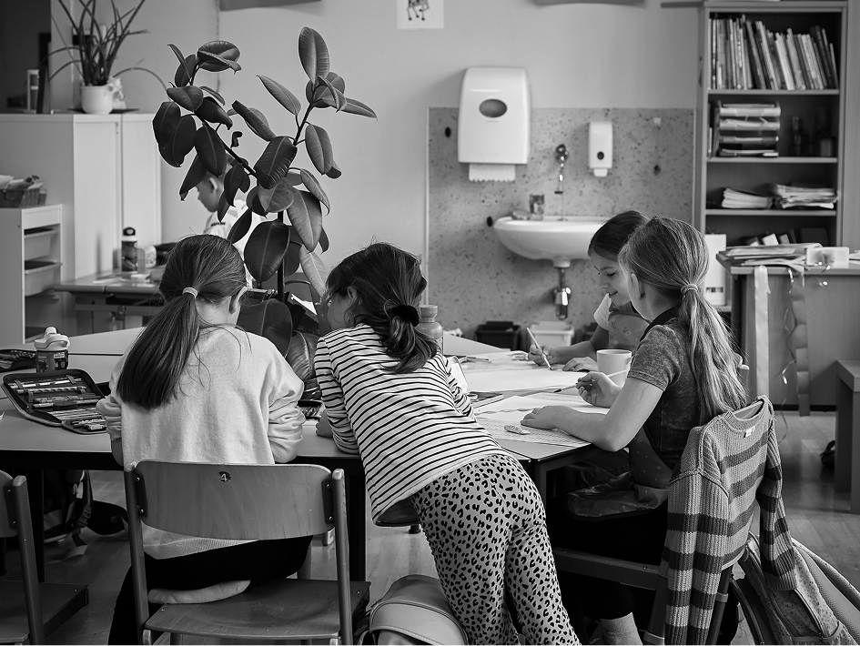
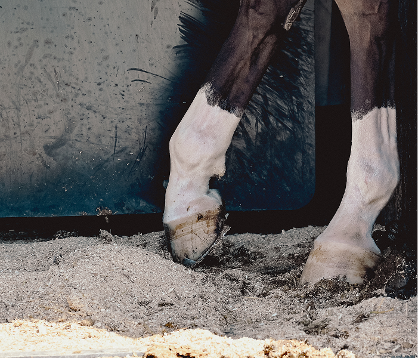
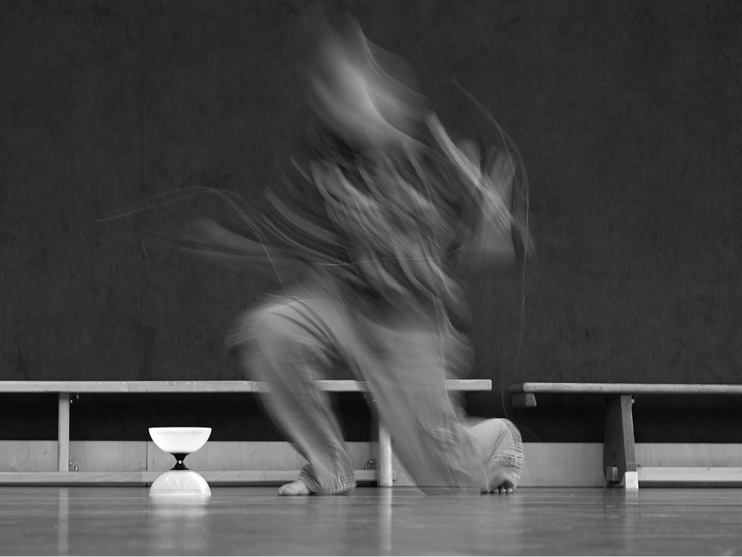
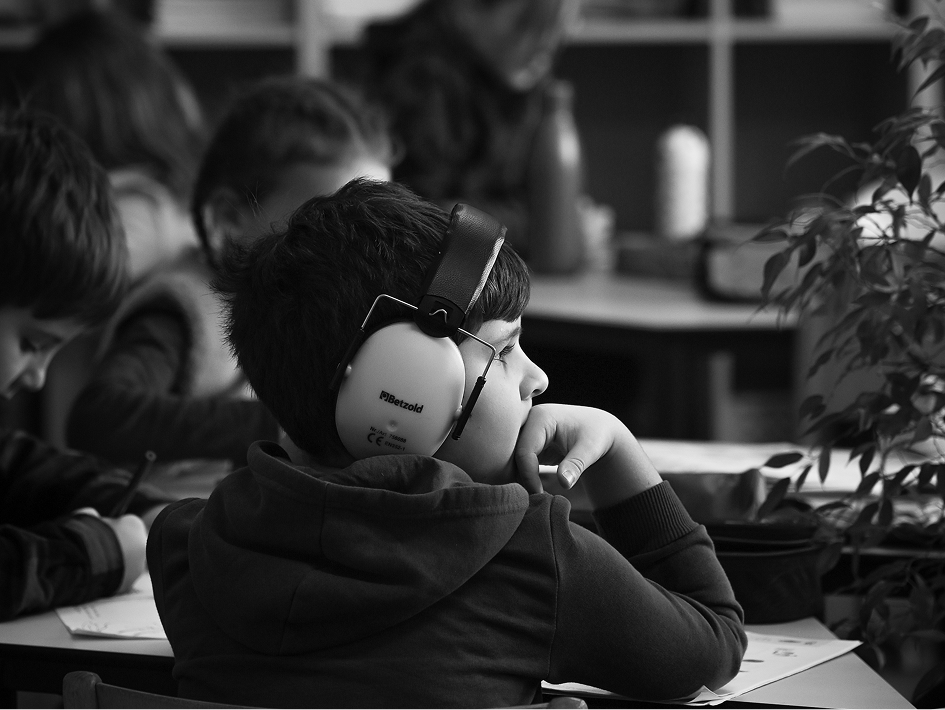
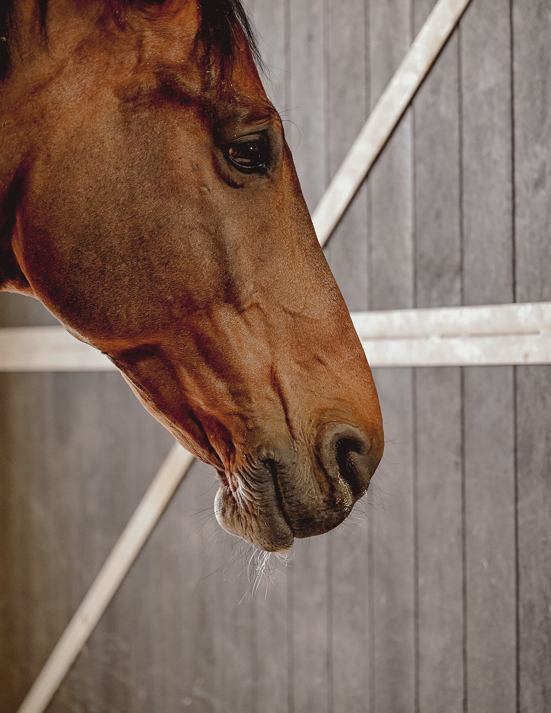
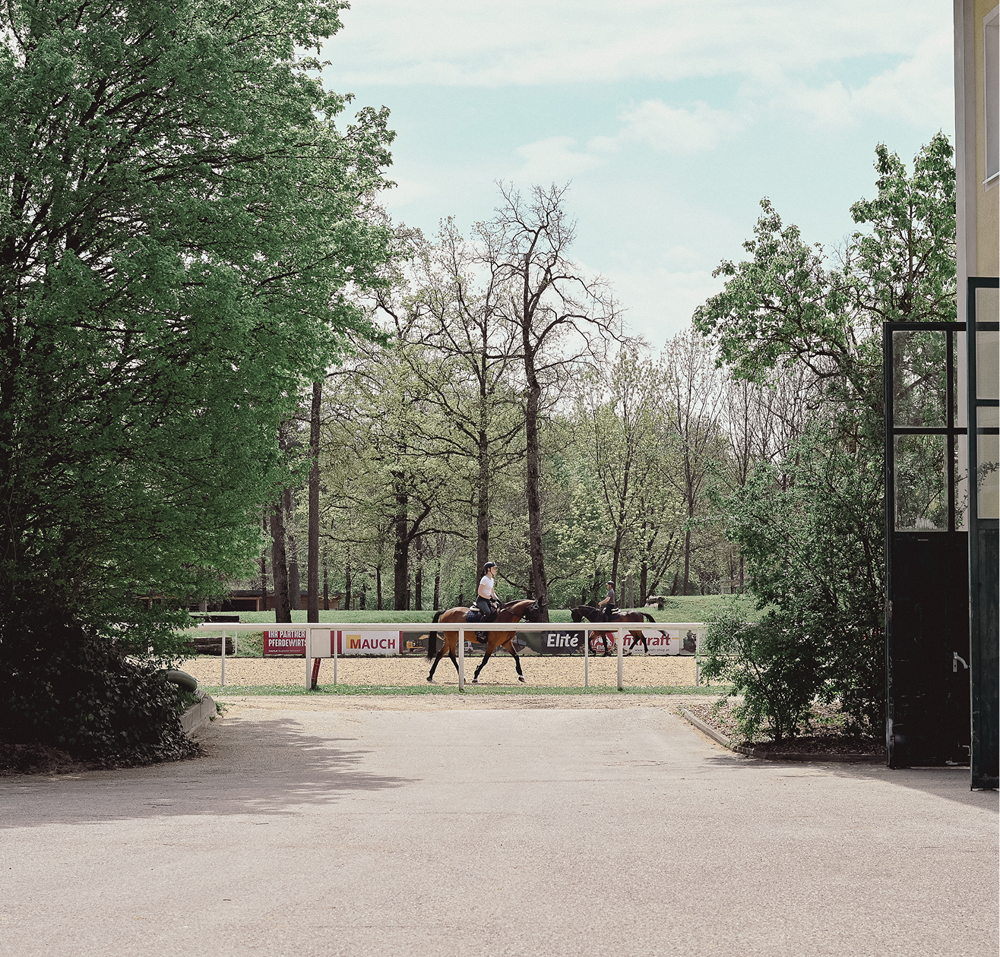

PHOTO
GRAPHY
FH PROJECTS
In the first two semesters, I completed two
photography projects for the FH, exploring
different photographic approaches and
developing my visual language.

One project should be inspired by a photographer who lived in the 19th century or earlier. I was inspired by Edith-Tutor Hart
/ 01 - 2025



The project shows children in an elementary school working with a method
called „Freiarbeit" (free work). The kids decide for themselves when to do
each task and whether to work alone or with others. They can sit, lie on the
floor, or even hang upside down - whatever helps them learn best.


This photo project takes a look behind the scenes of
the equestrian center away from the big tournament
moments. It shows everyday life at the facility.